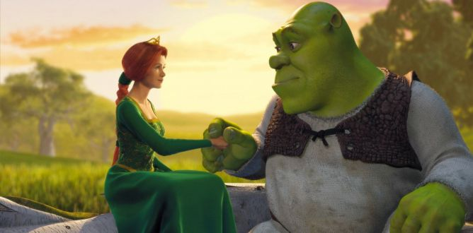

Shrek

Our Rating: 9/10
Overview
Shrek is a 2001 American computer-animated comedy film loosely based on the 1990 fairytale picture book of the same name by William Steig. Directed by Andrew Adamson and Vicky Jenson in their directorial debuts, it stars Mike Myers, Eddie Murphy, Cameron Diaz and John Lithgow as the voices of the lead characters. In the story, an ogre called Shrek (Myers) finds his swamp overrun by fairy tale creatures who have been banished by the corrupt Lord Farquaad (Lithgow) aspiring to be king. Shrek makes a deal with Farquaad to regain control of his swamp in return for rescuing Princess Fiona (Diaz), whom Farquaad intends to marry. With the help of Donkey (Murphy), Shrek embarks on his quest but soon falls in love with the princess, who is hiding a secret that will change his life forever.
The rights to Steig's book were purchased by Steven Spielberg in 1991. He originally planned to produce a traditionally-animated film based on the book, but John H. Williams convinced him to bring the film to the newly-founded DreamWorks in 1994. Jeffrey Katzenberg began active development of the film in 1995 immediately following the studio's purchase of the rights from Spielberg. Chris Farley was originally cast as the voice for the title character, recording nearly all of the required dialogue. After Farley died in 1997 before the work was finished, Mike Myers stepped in to voice the character, which was changed to a Scottish accent in the process. The film was intended to be motion-captured, but after poor results, the studio decided to hire Pacific Data Images to complete the final computer animation.
Shrek premiered at the 2001 Cannes Film Festival, where it competed for the Palme d'Or, making it the first animated film since Disney's Peter Pan (1953) to receive that honor. It was widely praised as an animated film that featured adult-oriented humor and themes, while catering to children at the same time. The film was theatrically released in the United States on May 18, 2001, and grossed $484.4 million worldwide against production budget of $60 million. Shrek won the first ever Academy Award for Best Animated Feature and was also nominated for Best Adapted Screenplay. It also earned six award nominations from the British Academy of Film and Television Arts (BAFTA), ultimately winning Best Adapted Screenplay. The film's success helped establish DreamWorks Animation as a prime competitor to Pixar in feature film computer animation, and three sequels were released—Shrek 2 (2004), Shrek the Third (2007), and Shrek Forever After (2010)—along with two holiday specials, a spin-off film, and a stage musical that kickstarted the Shrek franchise. Although plans for a fifth film were canceled prior to the fourth film's release, the project was revived in 2016 and has since stalled, with production and a potential release date getting pushed back.
Plot
Shrek, a mean-spirited and highly territorial green ogre who loves the solitude of his swamp, finds his life interrupted when he is befriended by a talkative Donkey, one of countless fairytale creatures exiled to Shrek's swamp by the fairytale-hating and vertically-challenged Lord Farquaad of Duloc. Angered by the intrusion, he decides to ask Farquaad to exile them elsewhere, bringing Donkey along as he is the only one willing to guide him to Duloc.
Meanwhile, Farquaad's torture of the Gingerbread Man for the location of the remaining fairytale creatures is interrupted when his guards present him with a Magic Mirror. He asks the Mirror if his kingdom is the fairest of them all but is told that he is not even a king, and that he must marry a princess. Farquaad resolves to marry Princess Fiona, who is locked in a castle tower guarded by a dragon. Unwilling to perform the task himself, he organizes a tournament wherein the winner gets the "privilege" of rescuing Fiona for him. Shrek and Donkey arrive during the tournament, and ignorantly defeat Farquaad's knights. Farquaad proclaims them the champions, and compels them under threat of death to rescue Fiona, promising to move the fairytale creatures from Shrek's swamp if he succeeds.
Shrek and Donkey travel to the castle to find Fiona. They are attacked by a Dragon, who corners Donkey. In desperation, he sweet-talks the beast, learning that it is female. Dragon falls in love with Donkey and carries him to her chambers. Meanwhile, Shrek finds Fiona, who is appalled at his lack of romanticism and surprised he had not slain Dragon. They leave after rescuing Donkey, and Fiona is thrilled to be rescued but is quickly disappointed when Shrek reveals he is an ogre. Despite her demands that Farquaad come get her in person, Shrek forcibly carries her as he ventures back to Duloc with Donkey. At night, Shrek explains to Donkey his frustration at how society judges him for how he looks; Fiona overhears this, and decides to be kind to Shrek. The three encounter Robin Hood on their way back, where it is revealed that Fiona is an expert martial artist. Shrek and Fiona find they have much in common and begin to fall in love.
When the trio is almost at Duloc, Fiona takes shelter in a windmill for the evening. Donkey hears strange noises from within and investigates, finding Fiona transformed into an ogress. Fiona reveals that she was cursed during childhood to transform every night, and that only her true love's kiss will change her to "love's true form". Meanwhile, Shrek is about to confess his feelings to Fiona, but then overhears part of their conversation and becomes upset after mistaking her calling herself an "ugly beast" as disgust towards him. At Donkey's suggestion, Fiona vows to tell Shrek about her curse, but sees that Shrek has brought Lord Farquaad to the windmill. Confused and hurt by Shrek's sudden cold disposition towards her, Fiona accepts Farquaad's marriage proposal and requests they be married before nightfall. The couple return to Duloc, while Shrek angrily abandons Donkey and returns to his now-vacated swamp.
Angered, Donkey arrives at the swamp and confronts a still upset Shrek. Donkey explains that the "ugly beast" Fiona was referring to was someone else, and the two reconcile. Donkey urges Shrek to express his feelings for Fiona before she is married, and the two travel to Duloc quickly by riding Dragon, who had escaped her confines and followed Donkey.
Shrek interrupts the wedding before Farquaad can kiss Fiona; he tells her that Farquaad is not her true love and is only marrying her to become king. The sun sets, which turns Fiona into an ogress in front of everyone, causing a surprised Shrek to understand what he overheard. Outraged, Farquaad orders Shrek executed and Fiona detained. Dragon bursts in alongside Donkey and devours Farquaad alive. Shrek and Fiona profess their love and share a kiss, and Fiona's curse is lifted. While Fiona is surprised and disappointed to see that she is still an ogress despite the fact that she was supposed to become beautiful, Shrek states that she already is beautiful. They marry in the swamp and leave on their honeymoon.
Cast
- Mike Myers as Shrek and Blind Mouse
- Eddie Murphy as Donkey
- Cameron Diaz as Princess Fiona
- John Lithgow as Lord Farquaad
- Vincent Cassel as "Monsieur" Robin Hood
- Conrad Vernon as Gingerbread Man
- Chris Miller as Geppetto / Magic Mirror
- Cody Cameron as Pinocchio / The Three Little Pigs
- Simon J. Smith as Blind Mouse
- Christopher Knights as Blind Mouse and Thelonius
- Aron Warner as Big Bad Wolf
- Jim Cummings as Captain of the Guards
- Kathleen Freeman as Old Woman (Donkey's ex-owner)
- Andrew Adamson as Duloc Mascot (a man dressed in a suit that looks like Lord Farquaad)
- Bobby Block as Baby Bear from the Three Bears
- Michael Galasso as Peter Pan